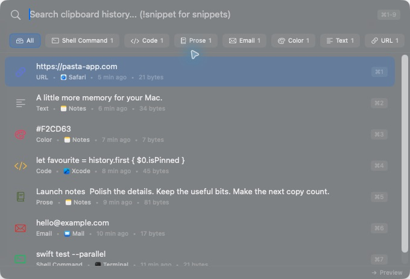
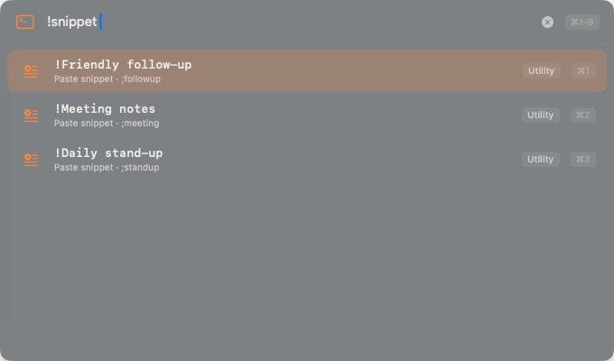

Find it without the hunt.
Search your history as you type. Filter by content type and paste straight back into the app you’re using.
A little more memory for your Mac.
Copy something good. Keep it close. A fast, local-first clipboard history manager for macOS that remembers the links, words and images you’ll need again.
Fresh from the kitchen: the 1.6 releases
Lives on your Mac
Ready at ⌃ ⌘ V
No account needed
Yours to keep
The link you closed. The sentence you rewrote. The colour you finally got right. Copy as usual; Pasta keeps the useful bits within reach.
Search your history as you type. Filter by content type and paste straight back into the app you’re using.
Links, images, code, colours and more get their own previews. Pasta recognises what you copied so you don’t have to.
Pin the things you reach for every day. Paste without formatting, or select several entries and copy them together.
Turn your repeat replies into snippets. Fill in dates, clipboard content and other placeholders when you paste. Open the snippet picker with !snippet.
Prefer the keyboard? Command Mode lets you pause capture, filter history and change settings from the search field.
See the keyboard shortcuts
A native app with light and dark appearances, a menu bar home and a panel that’s there when you need it.
Optional iCloud sync connects your Mac and iPhone history through your iCloud account. It’s off until you turn it on.
Import history from Alfred, Maccy, Flycut, CopyClip, Paste, Pastebot or Clipy. Export it as JSON whenever you like.
History stays on your Mac by default. No account to create. Password-manager and sensitive clipboard items are skipped automatically. iCloud sync, crash reporting and usage analytics are opt-in.
Read the privacy detailsLocal by default.
Open source, always.
A few recent improvements, and a look at where Pasta is heading.
Highlights from September 2026
Automatic iCloud receiving on Mac, plus privacy-safe sync diagnostics to help explain what’s happening.
A snippet picker, placeholders resolved as you paste, optional keyword expansion and more reliable delivery back to your app.
Roadmap, without the promises
Work is underway on sharing between personal Macs on different iCloud accounts over a private Tailscale network, with device pairing and sharing controls. This isn’t available yet.
Broader real-device checks for sync, offline recovery and app updates. The aim is to make everyday hand-offs easier to trust.
Follow the reliability workPlans can change. No release dates until they’re ready.
Have a suggestion?Your next copy deserves a second helping.
Free. Requires macOS 14.0 (Sonoma) or later.